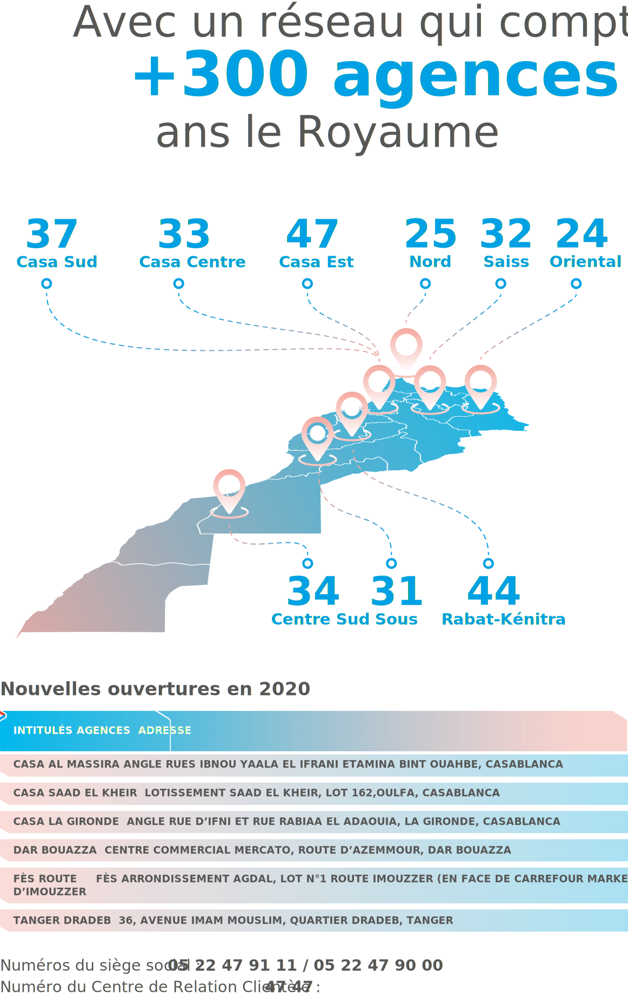

<div style="background-color: white; padding-bottom: 100px;">
    <div style="position: relative;">
        <div class="container-fluid" style="z-index: -3;">
            <div class="row w-100" style="position: relative; top: -50px;">
                <div class="col-md-2"></div>
                <div class="col-md-10 heading8 p-3 res">
                    <h1 dir="auto" key="t1" class="my-5" data-aos="fade-up" data-aos-duration="1000"
                        data-aos-easing="ease-out" data-aos-offset="300"></h1>
                </div>
            </div>
        </div>
        <div class="container content" style="z-index: 500;position: relative; top: -20px;">
            <div class="row res-chiffre">
                <div key="01" class="col-md-12">
                    
                </div>
            </div>
        </div>
    </div>
</div>
<script src="./app.js"></script>
<script src="https://unpkg.com/aos@2.3.1/dist/aos.js"></script>
<script>
    AOS.init();

    var btn = document.querySelectorAll("nav form .btn")[0];
    var icon = document.querySelectorAll("nav form svg")[0];
    var logo = document.querySelectorAll("nav a img")[0]
    window.addEventListener("scroll", function () {
        if (btn.style.color == "white" && window.scrollY >= window.innerHeight - 50) {
            btn.style.color = "black"
            icon.setAttribute("fill", "black")
            logo.setAttribute("src", "./images/logo-dark.png")
        } else if (btn.style.color == "black" && window.scrollY < window.innerHeight - 50) {
            btn.style.color = "white"
            icon.setAttribute("fill", "white")
            logo.setAttribute("src", "./images/fr/Asset 3.png")

        }
    })

</script>